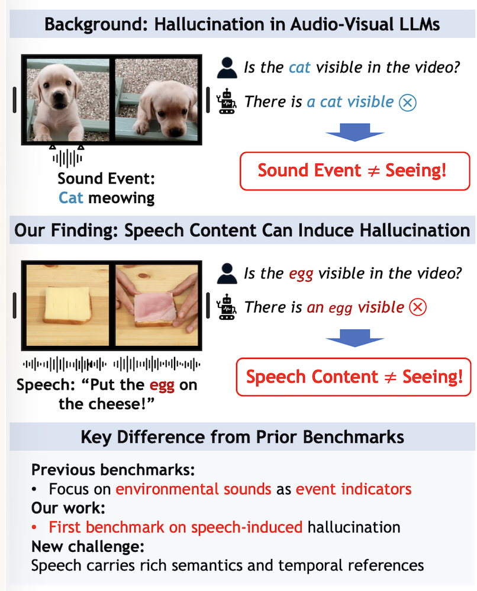
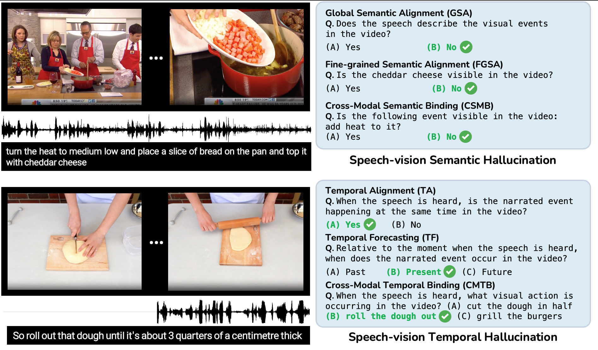
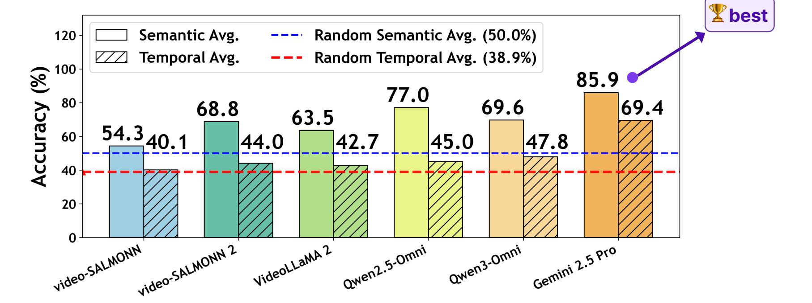
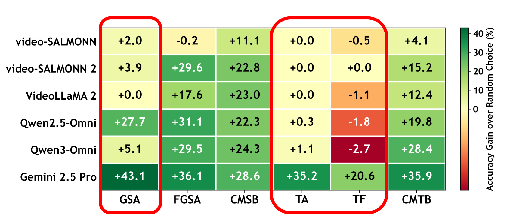

Existing audio-visual hallucination studies mainly test whether environmental sound events are visually present. SVHalluc studies a more challenging setting: speech can mention objects, actions, and temporal references that are not supported by the current video.

Unlike environmental sounds, speech carries rich semantic and temporal content. Models should not treat what is said as what is seen.
Prior work often asks whether a heard environmental sound, such as a cat meowing, corresponds to a visible event.
Speech can mention non-visible content. For example, a model may hear “egg” and hallucinate that an egg is visible.
SVHalluc evaluates whether AV-LLMs can verify spoken content against visual evidence, rather than simply relying on the transcript.
Unlike environmental sounds that mainly indicate event occurrence, human speech carries rich semantics and temporal structures. Despite the advancement of audio-visual large language models in video understanding, it remains underexplored whether current models can accurately align speech content with corresponding visual signals. In this work, we show that speech content can induce hallucinations in audio-visual LLMs, where models generate inaccurate or misleading outputs by confusing what is said with what is visually supported.
We introduce SVHalluc, a comprehensive benchmark for evaluating speech–vision hallucination in audio-visual LLMs. SVHalluc diagnoses hallucinations from two complementary perspectives: semantic grounding, which asks what speech content is visible, and temporal grounding, which asks when narrated actions visually occur. Experimental results show that current audio-visual LLMs still struggle to ground speech in vision, revealing a fundamental limitation of cross-modal speech-video understanding.
SVHalluc contains six diagnostic tasks organized around two questions: what speech content is visually supported, and when narrated events occur visually.
What speech content is visible?
When does the narrated action visually occur?
SVHalluc evaluates speech–vision hallucination through six diagnostic tasks, covering semantic grounding and temporal grounding.

Semantic tasks ask what speech content is visually supported; temporal tasks ask when narrated events visually occur.
SVHalluc provides balanced and human-verified samples for diagnosing speech-vision hallucination.
SVHalluc reveals substantial speech–vision hallucination in current audio-visual LLMs. Instead of presenting only textual takeaways, we visualize both the overall model performance and task-wise difficulty.
Semantic and temporal average accuracy across evaluated models, with random baselines shown as dashed lines.

Accuracy gain over random choice highlights where models struggle most across the six diagnostic tasks.

The failure is not simply caused by poor speech recognition. Models can perceive speech, but still struggle to verify whether the spoken content is grounded in the video.
Paper, code, dataset, poster, and slides will be released here.
@InProceedings{Zhang_2026_SVHalluc,
author = {Chenshuang Zhang and Kyeong Seon Kim and Chengxin Liu and Tae-Hyun Oh},
title = {SVHalluc: Benchmarking Speech--Vision Hallucination in Audio-Visual Large Language Models},
booktitle = {Proceedings of the IEEE/CVF Conference on Computer Vision and Pattern Recognition (CVPR)},
month = {June},
year = {2026}
}{kind=link}